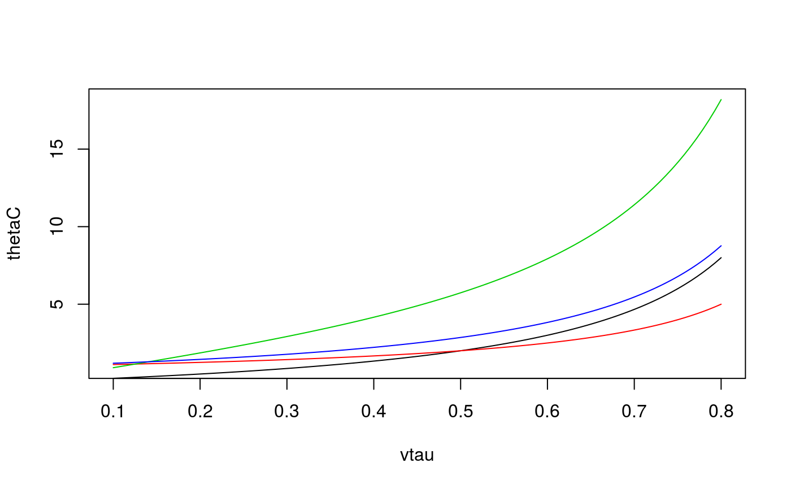

R/BiCopTau2Par.R
BiCopTau2Par.RdThis function computes the parameter of a (one parameter) bivariate copula for a given value of Kendall's tau.
BiCopTau2Par(family, tau, check.taus = TRUE)
| family | integer; single number or vector of size |
|---|---|
| tau | numeric; single number or vector of size |
| check.taus | logical; default is |
Parameter (vector) corresponding to the bivariate copula family and the value(s) of Kendall's tau (\(\tau\)).
No.
(family) | Parameter (par) |
1, 2 | \(\sin(\tau \frac{\pi}{2})\) |
3, 13 | \(2\frac{\tau}{1-\tau}\) |
4, 14 | \(\frac{1}{1-\tau}\) |
5 | no closed form expression (numerical inversion) |
6, 16 | no closed form expression (numerical inversion) |
23, 33 | \(2\frac{\tau}{1+\tau}\) |
24, 34 | \(-\frac{1}{1+\tau}\) |
26, 36 | no closed form expression (numerical inversion) |
The number n can be chosen arbitrarily, but must agree across
arguments.
Joe, H. (1997). Multivariate Models and Dependence Concepts. Chapman and Hall, London.
Czado, C., U. Schepsmeier, and A. Min (2012). Maximum likelihood estimation of mixed C-vines with application to exchange rates. Statistical Modelling, 12(3), 229-255.
## Example 1: Gaussian copula tau0 <- 0.5 rho <- BiCopTau2Par(family = 1, tau = tau0) BiCop(1, tau = tau0)$par # alternative#> [1] 0.7071068## Example 2: vtau <- seq(from = 0.1, to = 0.8, length.out = 100) thetaC <- BiCopTau2Par(family = 3, tau = vtau) thetaG <- BiCopTau2Par(family = 4, tau = vtau) thetaF <- BiCopTau2Par(family = 5, tau = vtau) thetaJ <- BiCopTau2Par(family = 6, tau = vtau) plot(thetaC ~ vtau, type = "l", ylim = range(thetaF))lines(thetaG ~ vtau, col = 2)lines(thetaF ~ vtau, col = 3)lines(thetaJ ~ vtau, col = 4)## Example 3: different copula families theta <- BiCopTau2Par(family = c(3,4,6), tau = c(0.4, 0.5, 0.6)) BiCopPar2Tau(family = c(3,4,6), par = theta)#> [1] 0.4 0.5 0.6